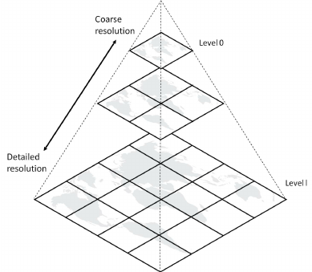

class: center, middle # How to add a map to your website without paying Google or Mapbox $$$$$$ ### Daniel Schep --- class: middle ### Google Maps - The big dog Cost continues to go up 📈 $5740/mo for 1mil map loads --- class: middle ### Mapbox - Not so much an underdog $3050/mo for 1mil map loads --- class: middle ### OpenStreetMap * Free data * Community driven * Plenty of corporate usage * Mapbox's primary data-source * Lyft & Amazon * Outdoor recreation * <span style="color:red">NO</span> commercial map service --- class: middle ### What's in a web map? <p></p> * JavaScript client library * (Vector) Map Tiles * Style * layers * fonts * sprites --- class: middle ### MapLibre * Fork of final OpenSource Mapbox libraries * Web and Native libraries --- class: middle ### OpenFreeMap * Free for all use * OpenMapTiles tile schema & styles * No limitations* <small>* if usage isn't insane</small> --- class: middle ### Let's put a map on a webpage! ```javascript <script src="https://unpkg.com/maplibre-gl/dist/maplibre-gl.js"></script> <link href="https://unpkg.com/maplibre-gl/dist/maplibre-gl.css" rel="stylesheet"> ``` ```javascript <div id="map" style="width: 100%; height: 500px"></div> <script> const map = new maplibregl.Map({ style: 'https://tiles.openfreemap.org/styles/liberty', center: [-77.46323,37.54989], zoom: 9.5, container: 'map', }) </script> ``` --- class: middle ### Let's put a map on a webpage! <div id="map" style="width: 100%; height: 500px"></div> --- class: middle ### PMTiles - Cloud-Native Vector Tiles * Single-file tiled archive of a world map - ~100GB * Access individual tiles with HTTP <kbd>Range</kbd> requests --- class: middle ### Self-Hosting! * Protomaps * Same creator as PMTiles * Ready-made tiles and styles * Cost for 1mil monthly map loads: * on AWS - 189.77 USD per month * on Cloudflare - 14.33 USD per month * OpenMapTiles * Download PMTiles from Tuiles en Liberté [tuiles.enliberte.fr](https://tuiles.enliberte.fr) * OpenFreeMap * Server-full solution * SquashFS archives available to download --- ### That's all folks! <br><br><br> * MapLibre: [maplibre.org](https://maplibre.org) * OpenFreeMap: [openfreemap.org](https://openfreemap.org) * Protomaps: [protomaps.com](https://protomaps.com) * Tuiles en Liberté: [tuiles.enliberte.fr](https://tuiles.enliberte.fr) * These slides: [slides.schep.me/add-a-map-rva-sdug-09-2025](https://slides.schep.me/add-a-map-to-your-webpage-rva-sdug-09-2025/) * Contact me: * <kbd>@Daniel Schep</kbd> on RVA Dev Slack * <a href="https://mastodon.social/@dschep"><kbd>@dschep@mastodon.social</kbd></a> on Mastodon * <a href="https://bsky.app/profile/trailsta.sh"><kbd>@trailsta.sh</kbd></a> on Bluesky